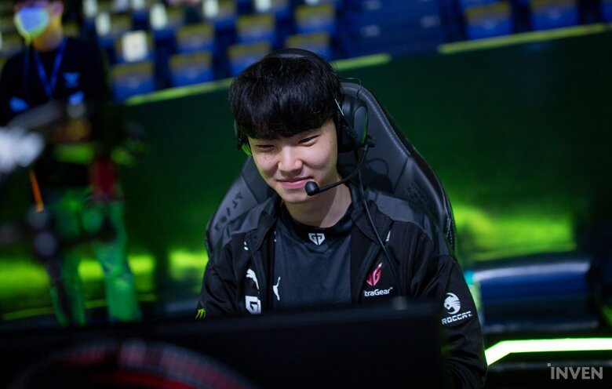

- HTML
- CSS
- JAVAScript
젠지 결승 진출

(엑스포츠뉴스 최지영기자) 젠지가 결승 진출에 성공했다.
27일 서울 종로 롤파크에서는 '2022 LCK 스프링' 플레이으포 2차전 젠지 대 담원 기아의 경기가 펼쳐졌다.
이날 담원 기아는 '버돌' 노태윤, '캐니언' 김건부, '쇼메이커' 허수, '덕담' 서대길, '켈린' 김형규가 등장했다.
젠지는 '도란' 최현준, '피넛' 한왕호, '쵸비' 정지훈, '룰러' 박재혁, '리헨즈' 손시우가 나왔다.
5세트에서 담원 기아는 블루 진영을 젠지는 레드 진영을 선택했다.
담원 기아는 레넥톤, 니달리, 제이스, 직스, 레오나를 픽했다. 젠지는 오른, 헤카림, 아리, 자야, 유미를 골랐다.
캐니언의 명품 니달리가 초반을 주도했다. 피넛의 정글을 모두 휩쓸며 정글 차이를 벌렸다.
캐니언의 발끝에서 시작됐다. 피넛을 끝내 터트리며 쵸비까지 잡아냈다.
담원 기아가 기세를 잡았다. 캐니언은 다시 한 번 적 정글을 털면서 피넛을 공략했고 이 과정에서 정글 차이는 극심하게 벌어졌다.
담원 기아는 멈추지 않았다. 담원 기아는 미드에 전령을 풀며 2차까지 파괴했고 탑 1차도 밀어냈다.
14분 전에 담원 기아는 포탑 골드를 모두 뜯어냈다.
젠지는 탑에 홀로 있던 쇼메이커를 제대로 노렸지만 담원 기아의 합류에 당했고 두 번째 전령도 내주고 말았다.
담원 기아는 속도를 더욱 냈다. 봇으로 머저 뭉치면서 2차를 파괴, 내각까지 터트렸다.
23분 경 담원 기아는 포킹으로 젠지를 밀어내며 바론까지 획득했다. 바론 버프를 두른 담원 기아는 탑으로 돌진했다.
탑을 밀고 들어가는 과정에서 젠지의 반격이 시작됐다. 젠지는 3킬을 만들면서 네 번째 화염용을 가져왔다.
젠지가 드디어 몸을 일으켰다. 담원 기아의 바론 시도를 막아내며 격차를 좁혔다. 33분 경 바론을 앞두고 대규모 한타가 열렸고 젠지가 룰러의 폭딜을 앞세워 대승을 거뒀고 바론을 처치했다.
젠지는 그대로 미드를 뚫었고 그대로 게임을 마무리했다.